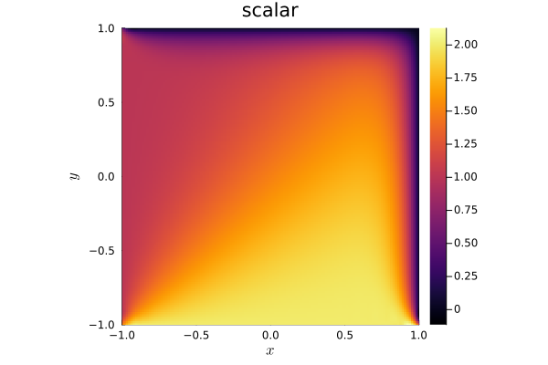

14: Adding new parabolic terms


This demo illustrates the steps involved in adding new parabolic terms for the scalar advection equation. In particular, we will add an anisotropic diffusion. We begin by defining the hyperbolic (advection) part of the advection-diffusion equation.
using OrdinaryDiffEqLowStorageRKusing Trixiadvection_velocity = (1.0, 1.0)equations_hyperbolic = LinearScalarAdvectionEquation2D(advection_velocity);Define a new parabolic equation type
Next, we define a 2D parabolic diffusion term type. This is similar to LaplaceDiffusion2D except that the diffusivity field refers to a spatially constant diffusivity matrix now. Note that ConstantAnisotropicDiffusion2D has a field for equations_hyperbolic. It is useful to have information about the hyperbolic system available to the parabolic part so that we can reuse functions defined for hyperbolic equations (such as varnames).
The abstract type Trixi.AbstractEquationsParabolic has three parameters: NDIMS (the spatial dimension, e.g., 1D, 2D, or 3D), NVARS (the number of variables), and GradientVariable, which we set as GradientVariablesConservative. This indicates that the gradient should be taken with respect to the conservative variables (e.g., the same variables used in equations_hyperbolic). Users can also take the gradient with respect to a different set of variables; see, for example, the implementation of CompressibleNavierStokesDiffusion2D, which can utilize either "primitive" or "entropy" variables.
struct ConstantAnisotropicDiffusion2D{E, T} <: Trixi.AbstractEquationsParabolic{2, 1, GradientVariablesConservative} diffusivity::T equations_hyperbolic::Eendfunction varnames(variable_mapping, equations_parabolic::ConstantAnisotropicDiffusion2D) return varnames(variable_mapping, equations_parabolic.equations_hyperbolic)endvarnames (generic function with 1 method)Next, we define the parabolic flux function. We assume that the mixed hyperbolic-parabolic system is of the form
\[\partial_t u(t,x) + \partial_x (f_1(u) - g_1(u, \nabla u)) + \partial_y (f_2(u) - g_2(u, \nabla u)) = 0\]
where $f_1(u)$, $f_2(u)$ are the hyperbolic fluxes and $g_1(u, \nabla u)$, $g_2(u, \nabla u)$ denote the parabolic fluxes. For anisotropic diffusion, the parabolic fluxes are the first and second components of the matrix-vector product involving diffusivity and the gradient vector.
Here, we specialize the flux to our new parabolic equation type ConstantAnisotropicDiffusion2D.
function Trixi.flux(u, gradients, orientation::Integer, equations_parabolic::ConstantAnisotropicDiffusion2D) @unpack diffusivity = equations_parabolic dudx, dudy = gradients if orientation == 1 return SVector(diffusivity[1, 1] * dudx + diffusivity[1, 2] * dudy) else # if orientation == 2 return SVector(diffusivity[2, 1] * dudx + diffusivity[2, 2] * dudy) endendDefining boundary conditions
Trixi.jl's implementation of parabolic terms discretizes both the gradient and divergence using weak formulation. In other words, we discretize the system
\[\begin{aligned} \bm{q} &= \nabla u \\ \bm{\sigma} &= \begin{pmatrix} g_1(u, \bm{q}) \\ g_2(u, \bm{q}) \end{pmatrix} \\ \text{parabolic contribution} &= \nabla \cdot \bm{\sigma} \end{aligned}\]
Boundary data must be specified for all spatial derivatives, e.g., for both the gradient equation $\bm{q} = \nabla u$ and the divergence of the parabolic flux $\nabla \cdot \bm{\sigma}$. We account for this by introducing internal Gradient and Divergence types which are used to dispatch on each type of boundary condition.
As an example, let us introduce a Dirichlet boundary condition with constant boundary data.
struct BoundaryConditionConstantDirichlet{T <: Real} boundary_value::TendThis boundary condition contains only the field boundary_value, which we assume to be some real-valued constant which we will impose as the Dirichlet data on the boundary.
Boundary conditions have generally been defined as "callable structs" (also known as "functors"). For each boundary condition, we need to specify the appropriate boundary data to return for both the Gradient and Divergence. Since the gradient is operating on the solution u, the boundary data should be the value of u, and we can directly impose Dirichlet data.
@inline function (boundary_condition::BoundaryConditionConstantDirichlet)(flux_inner, u_inner, normal::AbstractVector, x, t, operator_type::Trixi.Gradient, equations_parabolic::ConstantAnisotropicDiffusion2D) return boundary_condition.boundary_valueendWhile the gradient acts on the solution u, the divergence acts on the parabolic flux $\bm{\sigma}$. Thus, we have to supply boundary data for the Divergence operator that corresponds to $\bm{\sigma}$. However, we've already imposed boundary data on u for a Dirichlet boundary condition, and imposing boundary data for $\bm{\sigma}$ might overconstrain our problem.
Thus, for the Divergence boundary data under a Dirichlet boundary condition, we simply return flux_inner, which is boundary data for $\bm{\sigma}$ computed using the "inner" or interior solution. This way, we supply boundary data for the divergence operation without imposing any additional conditions.
@inline function (boundary_condition::BoundaryConditionConstantDirichlet)(flux_inner, u_inner, normal::AbstractVector, x, t, operator_type::Trixi.Divergence, equations_parabolic::ConstantAnisotropicDiffusion2D) return flux_innerendA note on the choice of gradient variables
It is often simpler to transform the solution variables (and solution gradients) to another set of variables prior to computing the parabolic fluxes (see CompressibleNavierStokesDiffusion2D for an example of this). If this is done, then the boundary condition for the Gradient operator should be modified accordingly as well.
Putting things together
Finally, we can instantiate our new parabolic equation type, define boundary conditions, and run a simulation. The specific anisotropic diffusion matrix we use produces more dissipation in the direction $(1, -1)$ as an isotropic diffusion.
For boundary conditions, we impose that $u=1$ on the left wall, $u=2$ on the bottom wall, and $u = 0$ on the outflow walls. The initial condition is taken to be $u = 0$. Note that we use BoundaryConditionConstantDirichlet only for the parabolic boundary conditions, since we have not defined its behavior for the hyperbolic part.
using Trixi: SMatrixdiffusivity = 5.0e-2 * SMatrix{2, 2}([2 -1; -1 2])equations_parabolic = ConstantAnisotropicDiffusion2D(diffusivity, equations_hyperbolic);boundary_conditions_hyperbolic = (; x_neg = BoundaryConditionDirichlet((x, t, equations) -> SVector(1.0)), y_neg = BoundaryConditionDirichlet((x, t, equations) -> SVector(2.0)), y_pos = boundary_condition_do_nothing, x_pos = boundary_condition_do_nothing)boundary_conditions_parabolic = (; x_neg = BoundaryConditionConstantDirichlet(1.0), y_neg = BoundaryConditionConstantDirichlet(2.0), y_pos = BoundaryConditionConstantDirichlet(0.0), x_pos = BoundaryConditionConstantDirichlet(0.0));solver = DGSEM(polydeg = 3, surface_flux = flux_lax_friedrichs)coordinates_min = (-1.0, -1.0) # minimum coordinates (min(x), min(y))coordinates_max = (1.0, 1.0) # maximum coordinates (max(x), max(y))mesh = TreeMesh(coordinates_min, coordinates_max, initial_refinement_level = 4, periodicity = false)initial_condition = (x, t, equations) -> SVector(0.0)semi = SemidiscretizationHyperbolicParabolic(mesh, (equations_hyperbolic, equations_parabolic), initial_condition, solver; boundary_conditions = (boundary_conditions_hyperbolic, boundary_conditions_parabolic))tspan = (0.0, 2.0)ode = semidiscretize(semi, tspan)callbacks = CallbackSet(SummaryCallback())time_int_tol = 1.0e-6sol = solve(ode, RDPK3SpFSAL49(); abstol = time_int_tol, reltol = time_int_tol, ode_default_options()..., callback = callbacks);println("Number of timesteps: ", sol.stats.naccept)using Plotsplot(sol)Enabling CFL-based timestepping
In the example above, we used an adaptive timestep based on truncation error estimates. Alternatively, we can also use a CFL-based timestep control, cf. StepsizeCallback. To be able to do so, we need to define max_diffusivity and have_constant_diffusivity for the new parabolic terms. In Trixi.jl, currently only the standard Laplace Diffusion and Compressible Navier-Stokes-Fourier parabolic terms are implemented. Since these equations have isotropic diffusivity, i.e., direction-independent coefficients, max_diffusivity is expected to return a scalar value.
To comply with the existing code, we thus also return a scalar value for our anisotropic diffusion, estimated by the spectral radius (largest in magnitude eigenvalue) of the diffusivity matrix. Since diffusivity is constant, we do not need to repeatedly compute the spectral radius.
using LinearAlgebra: eigvalslambda_max() = maximum(abs.(eigvals(diffusivity)))lambda_max (generic function with 1 method)This function indicates that the diffusivity is constant, i.e., does not depend on the solution u and thus needs not to be recomputed at every node.
@inline function Trixi.have_constant_diffusivity(::ConstantAnisotropicDiffusion2D) return Trixi.True()endReturn the estimated maximum diffusivity for CFL calculations based on the spectral radius of the diffusivity matrix computed above
@inline function Trixi.max_diffusivity(equations_parabolic::ConstantAnisotropicDiffusion2D) return lambda_max()endWe now supply the hyperbolic and parabolic CFL numbers
cfl_hyperbolic = 2.0 # Not restrictive for this examplecfl_parabolic = 0.21 # Restricts the timestepstepsize_callback = StepsizeCallback(cfl = cfl_hyperbolic, cfl_parabolic = cfl_parabolic)┌──────────────────────────────────────────────────────────────────────────────────────────────────┐
│ StepsizeCallback │
│ ════════════════ │
│ CFL Hyperbolic: …………………………………………………… Returns{Float64}(2.0) │
│ CFL Parabolic: ……………………………………………………… Returns{Float64}(0.21) │
│ Interval: …………………………………………………………………… 1 │
└──────────────────────────────────────────────────────────────────────────────────────────────────┘Add the stepsize callback to the existing callbacks
callbacks = CallbackSet(SummaryCallback(), stepsize_callback);Turn off adaptive time stepping based on error estimates
sol = solve(ode, RDPK3SpFSAL49(); adaptive = false, dt = stepsize_callback(ode), ode_default_options()..., callback = callbacks);println("Number of timesteps: ", sol.stats.naccept)plot(sol)
Package versions
These results were obtained using the following versions.
using InteractiveUtilsversioninfo()using PkgPkg.status(["Trixi", "OrdinaryDiffEqLowStorageRK", "Plots"], mode = PKGMODE_MANIFEST)Julia Version 1.10.12
Commit d93beab124c (2026-08-15 10:29 UTC)
Build Info:
Official https://julialang.org/ release
Platform Info:
OS: Linux (x86_64-linux-gnu)
CPU: 4 × AMD EPYC 7763 64-Core Processor
WORD_SIZE: 64
LIBM: libopenlibm
LLVM: libLLVM-15.0.7 (ORCJIT, znver3)
Threads: 1 default, 0 interactive, 1 GC (on 4 virtual cores)
Environment:
JULIA_PKG_SERVER_REGISTRY_PREFERENCE = eager
Status `~/work/Trixi.jl/Trixi.jl/docs/Manifest.toml`
[b0944070] OrdinaryDiffEqLowStorageRK v3.4.0
[91a5bcdd] Plots v1.41.7
[a7f1ee26] Trixi v0.17.6-DEV `~/work/Trixi.jl/Trixi.jl`This page was generated using Literate.jl.